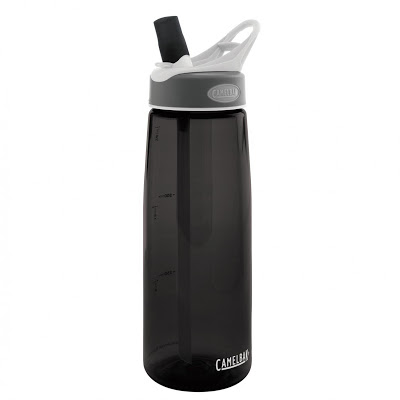
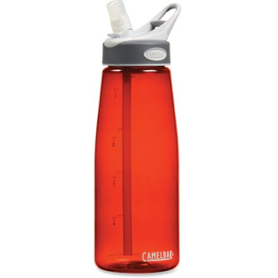
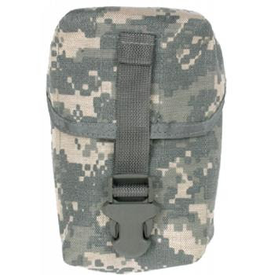
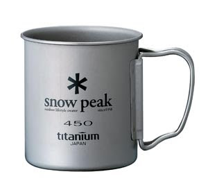
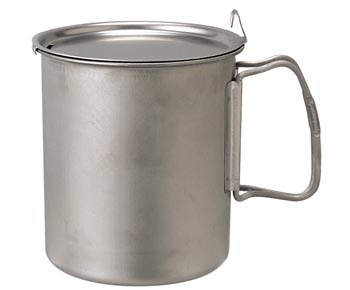
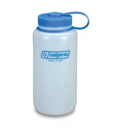

The CamelBak Better Bottle, 750 ML, with spout rotated up, ready to drink.OK, so I laid the groundwork in Parts One and Two to give you the background for this:
I have this friend who is always tinkering with his gear, never satisfied. An ex-airborne trooper, he's always modifying his kit in the light of new developments. This doesn't mean that he's a slave to military fashion. In his own way, he's quite a traditionalist but he is also open to new ideas.
So the other day I'm over at his place and he shows me his latest idea regarding tactical water. Now, he's used every canteen and hydration bladder known to man -- in the field where it has either failed him or sustained him. As I pointed out above, each of the systems has its own quirks. Some consider them drawbacks, others lovable idiosyncrasies and I'm not going to try to talk anybody out of anything they are happy with.
But my friend had been playing with the CamelBak "Better Bottles."


Here's one made of transparent plastic so you can see the internal straw. You can buy these at Academy Sports and other places for $10 - $12 bucks each. This water bottle has a rotating, no-spill bite valve so it seals up tight when rotated down or enables you to suck water out of it through the straw/bite valve without having to up-end it like a canteen. It is made of tough, BPA free plastic.
So he showed me one of these, and I said, "OK, but what do you put it in? You can't be happy with just hanging them off your belt or pack by the lanyard ring>"
Then he showed me this:


The Tactical Tailor Canteen Utility PouchThis is a Tactical Tailor Canteen Utility Pouch which is designed as a general purpose pouch that will fit a standard 1qt canteen (without cup) or most 1 litre water bottles. It has an adjustable quick release buckle, velcro hook and loop closure, and attaches with two long MALICE Clips which are included. The pouch measures 8.5"H x 5"W x 3"D and it is available in Coyote Brown, OD, Multicam, ACU, Ranger Green, MARPAT Woodland, MARPAT Desert and Black. The NSN is 8465015512452. See here: http://www.tacticaltailor.com/canteenutilitypouch.aspx
Now the bottle won't fit in the pouch without trimming off the lanyard ring, which is easy enough to accomplish.
Advantages? This system combines the bite-valve, no-leak system of the CamelBak bladder with the stoutness of a hard-shell canteen. It is made of non-carcinogenic plastic and holds more than a one-quart canteen. If need be, the top is easily screwed off for drinking large gulps, pouring water into a washcloth to wipe the sweat off your face or lavaging a dirty wound. Best, it cleans easily and every part of it is open to inspection (and scrubbing).
So far, so good. But remember when I told you how partial I was to canteen cups? Well, I figured we could go one or two steps better with this water bottle.
First, we found the the Snow Peak MG-043 Titanium Single Wall 450 Cup.


The Snow Peak MG-043 Titanium Single-Wall CupIt has a capacity of 14 ounces of fluid and being made of titanium it weighs in at a mere 2.4 oz. This cup fits on the butt end of the Better Bottle like a glove. Unfortunately, being titanium it is expensive, coming in at $23.95 MSRP.
Next, we found the Snow Peak SCS-005T Titanium Trek 700 Ti Minimum Cooker. This assembly includes a 4-1/8"diam x 4-3/8" pot and a 4-1/8"diam x 3/4" lid. It weighs in at a mere 4.8 oz. It too is pricey at $34.95 MSRP.


The Snow Peak Titanium Trek 700 Ti Minimum Cooker with Lid.Larger in diameter than the Snow Peak cup, it still fits into the bottom of the Tactical Tailor pouch and the bottle and cup assembly drops down into it. All three items fit in the Tactical Tailor pouch -- barely, but they fit. The lid of the cooker has a thumb rest and a drain hole so you can cook up rice or pasta and then drain off the excess water without dumping the contents.
The value of this improvised system is greater than the sum of its parts, I think. The biggest problem is the cost of the titanium utensils. The bottle and pouch can be had for a combined price of about $20 to $25. Obviously it would be better if the cup and cooker were more affordable, say if they were made of stainless steel for example.
We will continue to look and any if Threeper has any ideas along those lines, please let me know.


The Nalgeen water bottle.Finally, while I was writing this post up, I received this email from workinwifdakids:
G'morning, Mike.
I've enjoyed reading your PRAXIS series, and I'd like to comment on the canteen article. I have some thoughts I'd like to share with you. Granted, it looks like your article will have a second part, but I wanted to jump in now just in case.
I've always backpacked with two 32-oz Nalgene wide-mouth water bottles.
See: http://www.campmor.com/outdoor/gear/Product___80900
At $6/each new, they rival the cost of used military canteens and offer several advantages. First, the weight is less, at 0.23 pounds versus 0.3 pounds; negligible, but every ounce counts when you're humping a pack. Second, being able to see through the bottle allows you to wash it more thoroughly; again, perhaps negligible, but to my mind important none-the-less. Third, and absolutely critical, the wide-mouth feature allows the user to easily pour in additives like Gatorade or - in an emergency - hydration salts. It's really hard to empty the contents of a military canteen onto a fire without being on top of it, but not with its wide-mouth cousin. The thinner plastic lid can also be penetrated by a large-gauge needle and hung upside down for an improvised IV bottle.
Regarding the military version canteen cup, another alternative would be Coughlan's 12oz ("jumbo") Sierra Cup. Again at a cost of about $6, I carry two, and they nest one inside the other at a total weight of 5oz each for a total of 10oz for two, vs. 8oz for one military-style cup. I insist on two because one is for coffee, and the other is for eating from. The military style, though, has what the Sierra Cup lacks: that is, the ability to cook with it. If that's critical, then the military cup wins.
(As a brief footnote, allow me to recommend two large Lexan soup spoons. Together with the Sierra Cup, two large Lexan soup spoons COMPLETE - as in, are all you need for - your mess kit. What will a fork give you a spoon won't in the middle of the end? And a knife, you ask? You don't need a dedicated knife when you're carrying at least two knives on you in other places. Lexan knives and forks look really cute when you're in an RV or sleeping over at Johnny's place, but they're added weight and redundant.)
Now, I'd never give up my Nalgene bottles (or traditional canteen), BUT the next iteration of military canteen is the Camelbak. The variations in size and features are too numerous to properly discuss here, but this may be a great addition to a hydration system. If you do go this route, though, again - I would not forego the canteen, because the Camelbak, while great, has numerous disadvantages.
Finally, Mike, I'd like to bring up what I call every home's secret undisclosed water supply. Everyone talks about a toilet reservoir (*gack*), but every home has a 40-gallon water supply sitting in its garage: the hot water heater. Most have a hose connection at the bottom, as well, and what home doesn't have a garden hose? I'd never recommend trespassing, but under some circumstances it may be viable to use water from a hot water heater to refill a hydration device.
I hope this information is useful.
7 comments:
For a "modern" canteen cup, GSI makes a 18 oz stainless steel cup with a folding handle that just fits over the base of a Nalgene one liter bottle. Price at Amazon is $10.50.
www.amazon.com/GSI-Outdoors-Glacier-Stainless-Bottle/dp/B001LF3IB6/ref=wl_it_dp_o?ie=UTF8&coliid=I2HHZ1UE9UO8XX&colid=1P6WS11LR6E09
Nalgene bottles have additional pluses, over the camelback imporved water bottle.
A lot of water filters are made to directly attach to the top of the bottle. It is easy to rehydrate rice and beans in the large mouth bottle. The HDPE bottle tend to just bulge rather then crack when frozen and bounce better then dropped.
There are plenty of little camp post (or tin cans) that fit the bottom of the bottle. This bottle has been the main stay of campers for 20 years, so there is a lot of equipment available for it.
Lastly, I'm not a big fan of TI cookware, leaning more towards AL. Here is the reason, heat transfer. AL transfers heat much better, is almost as light and will require less fuel over the long haul. The is particularly important if you are going to cook over an alcohol cat stove, which on a cold & windy day, is barely enough heat to boil water.
The Naglene 32 ounce collapsible water bottle is superior to the hard models, in my opinon. Simple reason: You can roll them up when not in use. They have the same lid (wide mouth) that the solid ones do, and take very cold weather well. I have had mine in sub-zero weather and not had it crack when unrolled for use.
As far as cups go, the stainless steel USGI canteen cup can't be beaten for the price. It's a great utility pot and the weight isn't that bad. Sure, you can spend the money on an aluminum or titanium model, but for $5 new (at least where I bought yet another one last summer) you can't beat it.
The one thing I splurge on is a titanium 'spork'. Weighs about as much as a puff of smoke and is very strong. Cost me $10 at REI.
Just more options from the discussion....
Just to throw a few things out there:
Nalgene actually makes a bottle called the Oasis that is the exact same size and shape as the USGI plastic canteen, only it's see through and it's made from their lexan/poly material that they make all their other bottles out of that, unlike the GI canteen, wont become a petri dish if you put something like juice or emercen-c in and don't immediately scrub it out. Only about $8, too.
http://www.nalgene-outdoor.com/store/SearchResult.aspx?CategoryID=73
For the canteen cup, the Heavy Cover Lid:
http://www.heavycoverinc.com/
Will withstand temps up to 450 or something like that, good for cooking over a triox stove or on the radiator, not so good for over the open fire though, although I hear they are making a steel version for that.
Also I like platypus bags. They are even more collapseable than the 2qt canteen, you can do the same thing with sucking all the air out so they don't slosh. And you can buy a hose to convert one into a bladder, so they're versitile. Oh, and they don't get all slimey and yucky like camelbacks do.
511 Tactical makes bottle carriers with MOLLE attachments. I have a couple and they are well made. The price isn't too bad either at about $15.
http://www.511tactical.com/browse/Home/All-Products/Accessories/Pouches/H2O-Carrier/D/30100/P/1:100:50000:50800:50811/I/58722
The titanium cup reminded of an article I read just a bit ago on a bushcraft blog. It was how to make your own lid for the TI cup.
http://naturallore.wordpress.com/2009/11/14/lifeventure-titanium-cup/
The bushcraft/wilderness survival community has a lot of ideas, tips and tricks that are useful. You just need to look.
Just went searching on Amazon and found a Hands Free Adapter for the Better Bottle. Basically it's the convenience of a bladder with a canteen's functionality.
Post a Comment